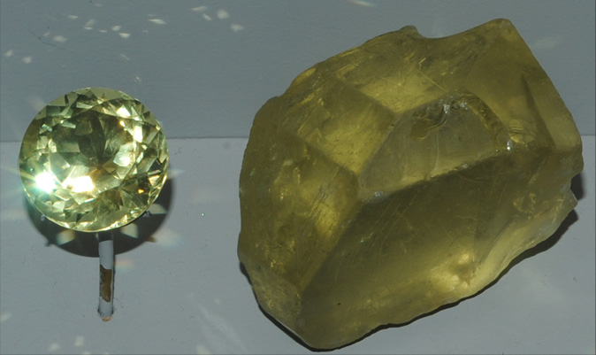
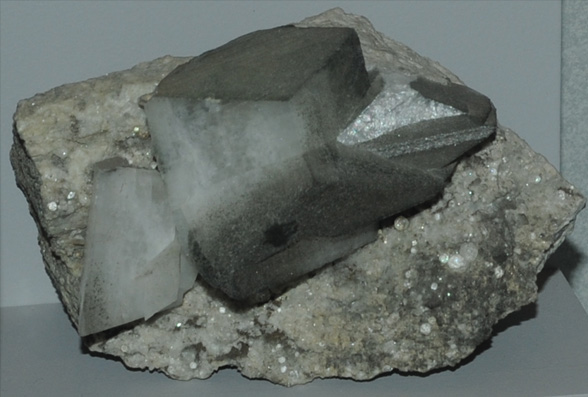
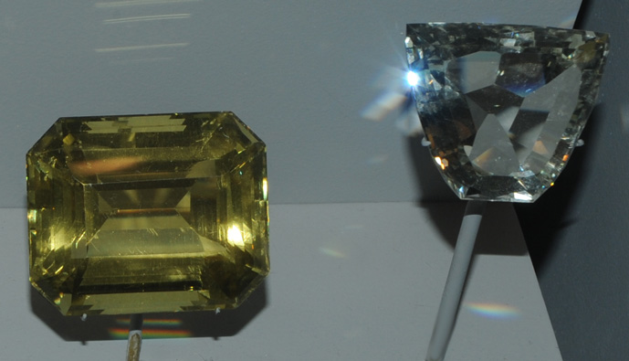
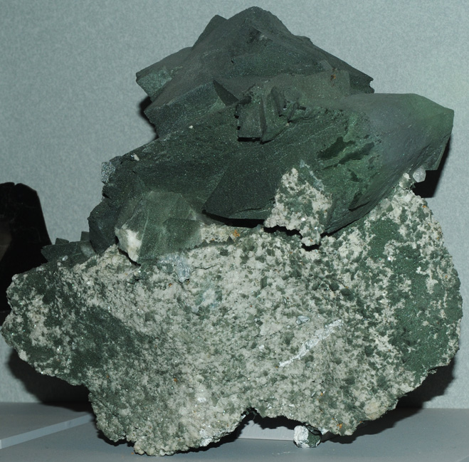

Orthoclase
Orthoclase |
Orthoclase (KAlSi3O8) is one of the forms of feldspar. It is an aluminum-containing silicate which forms with no cleavage planes. This feldspar is distinguished from the plagioclase form by its content of potassium .
|
The feldspars are the most abundant minerals on the earth. Polycrystalline orthoclase is usually light cream to salmon pink in color, although color is not a reliable indicator of mineral type.
Orthoclase can form in single crystals like that shown at right, although the polycrystalline form above is the common occurrence. This crystal sample is about 5x3 cm and the gem is 61 carats. The sample is from Madagascar. |

|
The orthoclase sample at left is about 8x16 cm and is from Rhone Glacier, Aar Massif, Switzerland. It is of variety adularia. The sample at right is about 8x14 cm and is from St. Gotthare, Ticino, Switzerland. That sample is labeled as variety adulara with quartz and chlorite.
|  |
The orthoclase sample above left is a single crystal about 4x4 cm from Binnatal, Valais, Switzerland. The sample above right is about 8x5 cm and is from Baveno, Italy. At left is a sample about 15x10 cm from Rhone Glacier, Aar Massif, Switzerland.
|
| These orthoclase gems are 249.5 and 126.4 carats and are from Madagascar. |

|
|  |
This orthoclase sample is of variety adularia and is described as orthoclase with chlorite. It is about 20 cm wide and is from Grissons, Switzerland.
|
These gems are of the variety of orthoclase known as moonstone. From left above left are 119 carat and 45.5 carat gems from Sri Lanka. Next is a 4.8 carat gem from Burma. The next two gems are from Austria. The far right gem is 14.8 carats and is from Floiten Tal, Tirol, Austria. The carved gems below are 24.4 and 50.8 carats from Sri Lanka.
Mindat: Orthoclase
Mindat: Moonstone
|
Index |